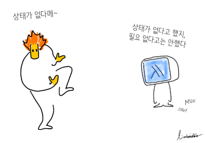

상상 하스켈
ML 스타일 문법이 너무 예쁘고(처음에는 ML을 몰라 하스켈만의 문법인 줄 알았습니다.) Async 라이브러리가 너무 간결해 빠져들게 된 언어입니다. 여기 오는 분들은 거의 없지만, 그래도 공개된 곳이다보니, 여기 저기 비어 있는 곳들을 최대한 꼼꼼히 채워 올리게 됩니다. 그런 약간의 부담감 덕분에, 제 스스로의 이해를 다듬는데 도움이 됩니다.
여기 글들은, 입문서 중간까지는 본 분들이 읽기 적당하고, 비수학적입니다.

상태는 필요해
비슷한 진도에서 고민하고 있는 다른 사람은 어떤 아이디어를 갖고 접근하고 있을까 궁금할 때 보시기 바랍니다. 누군가를 가르치기 위해 쓴 정교한 텍스트가 아니라, 노트 수준 글입니다. (궁금증을 해결해 주는 텍스트를 못찾거나, 혹은 이해를 못해, 상상으로 쓴 것들이 많습니다.)
지금까지 알게된 국내 하스켈 디스코드는 두 곳입니다. 여기 글들에서 의심스러운 결론들이 보이면 아래 채널들에 들어가 보시는 걸 추천드립니다. 두 채널의 성격이 조금은 다르니 두 곳 모두 들어가 보셔도 좋습니다.
Haskell 학교 - 하스켈 공부 중이라면 꼭 들어가 보세요.한국 하스켈 모임 - 현업에 계신 분들이 주를 이룬 곳인 듯 한데, 지금(2023)은 대화가 뜸하긴 합니다.
작성 완료하거나, 올릴 수 있을 정도의 정리된 글만 (작성 중)이란 표시를 붙여 올려왔는데요. 지금 부터는 최대한 같은 주제를 보고 계신 분들과 소통하기 위해
(작성 예정) : 주제만 선정한 상태입니다.
(스케치 중) : 내용도 이해하지 못하고, 전혀 정리되지 않은 상태입니다.
(작성 중) : 일부 이해했다 생각이 들어 정리한 상태입니다.
아무 표시 없음 : 작성을 끝내고, 일단락 지은 상태입니다.
4가지 상태의 글을 모두 올립니다.
글 중 관심있는 주제가 있거나, 하스켈에 대해 일시적으로 대화 나눌 분은 아래 서버로 들어오셨다가, 대화 끝나면 바로 나가시면 됩니다. 물론 머무시면 더 좋고요.Lionhairdino 디스코드 Vim.kr(한국 빔 사용자 모임) 디스코드 로 오셔도 좋습니다.NixOS.kr 디스코드 로 오세요.
산문
닉스로 하스켈 빌드 예시 (스케치) - March 20, 2025
닉스로 하스켈 프로젝트 빌드 (스케치 중) - March 7, 2025
Core 언어 둘러 보기 (작성 중) - February 28, 2025
크리스마스에는 모나드지 - December 24, 2024
Free 모나드 DSL 예시 - December 22, 2024
Free 모나드 - December 15, 2024
순수 함수형 패키지 매니저 닉스Nix (스케치 중) - December 12, 2024
닉스의 Flake - December 2, 2024
함수형 프로그래밍(스케치 중) - November 28, 2024
Neovim에서 LSP 설정에 쓰이는 플러그인들의 역할 - November 25, 2024
Modeling Variables with Pure functions (En) - November 16, 2024
순수 함수로 변수 모델링 (작성 중) - November 16, 2024
마크다운으로 슬라이드 만들기 Marp - March 16, 2024
FRAN - Functional Reactive ANimation (스케치 중) - March 7, 2024
지금2024.1 하스켈 시작하는 분들에게 자료를 추천한다면 - January 27, 2024
한 가지 절차, 혹은 개념으로 봐 오던 걸 여러 개로 쪼개기 - January 21, 2024
Lens와 요네다 보조 정리 (작성 예정) - January 6, 2024
홈펑터Hom Functor와 요네다 보조 정리Yoneda lemma - December 16, 2023
Adjunction에서 η와 ϵ의 화살표 방향이 반대인 이유 - December 5, 2023
Adjunction을 만드는 두 Adjoint 펑터로 모나드 표현하기 - November 16, 2023
얌파 Yampa (작성 예정) - October 29, 2023
Reflex (작성 예정) - October 29, 2023
Monadic Stream Function (작성 중) - October 17, 2023
FRP의 Event와 Behavior (작성 중) - October 11, 2023
reactive-banana 예시로 FRP 동작 방식 이해해 보기 (작성 중) - October 7, 2023
선언형 프로그래밍 - October 7, 2023
Arrow 예시 - Circuit - September 29, 2023
Arrow 쓰는 방법 (스케치 중) - September 22, 2023
쿼리를 작성 할 때도 타입 체커를 써먹자 - Opaleye (작성 중) - September 16, 2023
Arrow로 함수 컴비네이션 (작성 중) - September 14, 2023
Cabal 빌드 플래그 - July 12, 2023
마크다운에서 백틱backtick 입력에 시달릴 때 - March 22, 2023
터미널 Neovim에서 Ctrl + Enter 바인딩 잡기 - Kmonad - March 14, 2023
Delimited Continuation (작성 중) - March 14, 2023
비수학인이 해석한 모노이달 카테고리 - March 10, 2023
한 번쯤 나올 법 했는데, 아직 없었던 펑터 이야기 - March 9, 2023
비수학인이 해석한 모노이드 - 모노이드가 왜 중요할까? - February 16, 2023
Template Haskell(작성 중) - January 13, 2023
MonadFix - January 12, 2023
Eff 모나드(작성 예정) - January 12, 2023
Representation 다형성 - January 5, 2023
Generics 프로그래밍 (작성 예정) - January 5, 2023
Unboxed, Boxed, Unlifted, Lifted - December 20, 2022
vim 설정 글을 쓸 때, 꼭 있었으면 하는 내용 - December 14, 2022
ST 모나드 - forall의 강력함 - December 12, 2022
Reverse State 모나드 - 교차 재귀 끝판왕 (작성 중) - December 12, 2022
리니어 타입 (작성 중) - December 12, 2022
타입 레벨로 가는 문턱 - 타입에 정보 담아 두기 (작성 중) - December 12, 2022
결합 법칙, 교환 법칙, 항등원, 합성 - December 12, 2022
Effect의 결합 법칙 - December 7, 2022
함수형 프로그래밍에서 함수 - November 23, 2022
Monad없이 Maybe, State의 Effect 해결하기 - November 18, 2022
UnliftIO - November 13, 2022
Free 변수 - November 11, 2022
Covariant, Contravariant, Positive, Negative - November 10, 2022
동적 문법 강조 Dynamic Syntax Highlighting - October 28, 2022
Evaluation의 번역어 평가 - October 21, 2022
Applicative Functor와 Monad의 차이 - September 6, 2022
Effect - September 3, 2022
재귀 생각법 - July 27, 2022
모나드가 함수형 프로그래밍에 찰떡인 이유 - July 24, 2022
Vim + Haskell Language Server - July 2, 2022
단순한 모나드 코드 - May 22, 2022
모나드, 같음 - m (m a)와 m a는 얼마나 다를까? - March 25, 2022
Lazy ByteString 과 Strict ByteString - October 21, 2021
여기 있는 다른 글을 읽기 전에 준비 운동 - 품고 품기 - August 30, 2021
모나드 스택에서 안 쪽에 있는 모나드에 제약 사항이 또 필요한 이유 - August 21, 2021
여러 타입들이 공통된 속성이 있다면, 클래스로 타입을 열어 두자 - August 14, 2021
함수 글자 뜻 - August 9, 2021
Attoparsec 사용법 - July 7, 2021
Strict와 Lazy - June 20, 2021
지연Lazy 평가를 이해하기 위해 필요한 용어 - June 19, 2021
bottom, Void, undefined, unit - June 17, 2021
Void - June 15, 2021
Weak Head Normal Form에서 head의 뜻 - June 3, 2021
Parsec - 파서를 위해 태어난 모나드 - May 21, 2021
모나드 액션들간의 소통 - 상태 "개념"은 함수형에도 있다. - May 18, 2021
Lens - 펑크터의 독특한 활용 - May 13, 2021
함수형 시작과 아마도 끝 - May 7, 2021
함수가 들어 있는 데이터 타입의 펑크터 만들기 - May 7, 2021
코모나드 comonad - May 6, 2021
forall - 아무거나 (하나)와 모든 것의 차이 - May 4, 2021
타입 추론할 때, 살짝 숨어 있는 제약constraint사항들 주의하기 - April 23, 2021
타입 추론 과정 따라가기 - April 22, 2021
타입 추론 - 함수 서명과 몸체의 타입 매칭 - April 15, 2021
클래스 제약 Class Constraint - April 13, 2021
대수 타입 Algebraic data type - April 11, 2021
하스켈로 가기 전 필수 코스 - 람다 대수 기본 용어 - April 8, 2021
Async 시작 - March 25, 2021
Deduction vs Induction - March 19, 2021
코드 조립 - January 29, 2021
Typed Holes - September 8, 2020
newtype은 왜 필드 하나만 갖는 생성자 하나만 있는 타입일까? - August 19, 2020
모나드 체인이 목표하는 코드 모양과 실행 순서 - August 6, 2020
프로그래밍에서 가끔 만나는 언어학 용어들 - August 5, 2020
String, Text, ByteString - August 4, 2020
CPS - Continuation Passing Style - July 28, 2020
Has type class 패턴, mtl 스타일 - July 21, 2020
인스턴스instance의 의미 - July 21, 2020
모나드 트랜스포머 - Monad Transformer 그리고 mtl - July 16, 2020
Type equality constraint "~" - July 14, 2020
하스켈 소스 들여 쓰기 - July 12, 2020
생소한 용어들을 만나면 어원etymology부터 - July 12, 2020
폴리모픽 타입 변수 a는 정말 어떤 타입이든 상관 없는걸까?, 하스켈, haskell, 함수형, Functional - July 11, 2020
Lazy Pattern Match - July 11, 2020
Tagless Final style - July 7, 2020
Fix 함수 - July 7, 2020
Free 모나드 패턴 - July 3, 2020
컨텍스트, Applicative 펑터, Traversable - July 2, 2020
Int 와 Maybe Int의 차이. (값을 감싸는wrapping 이유) - June 24, 2020
모나드 문턱에서 - June 24, 2020
Servant - June 19, 2020
이 바닥 셀럽분들 - June 18, 2020
하스켈에 대한 오해 - June 17, 2020
하스켈(함수형)의 가장 근본이 되는 두 가지 특징 - June 17, 2020
Hakyll 과 Github Action - June 17, 2020
타입 클래스, 타입 추론, Dependent Haskell - June 17, 2020
언어 확장
확장 OrPatterns (작성 예정) - December 18, 2024
확장 MonoLocalBinds (스케치 중) - November 19, 2024
확장 CPP - November 19, 2024
확장 RecursiveDo - October 7, 2023
확장 GeneralisedNewtypeDeriving (GeneralizedNewtypeDeriving) (작성 중) - September 21, 2023
확장 Arrows (작성 중) - September 14, 2023
확장 DerivingVia - January 21, 2023
확장 TypeSynonym(작성 예정) - January 10, 2023
확장 InstanceSigs (작성 중) - January 10, 2023
확장 UnicodeSyntax (작성예정) - January 6, 2023
확장 PackageImports (작성예정) - January 6, 2023
확장 LinearTypes (작성예정) - January 6, 2023
확장 DuplicateRecordFields (작성예정) - January 6, 2023
확장 TypeInType (deprecated) (작성예정) - January 5, 2023
확장 PolyKinds (작성 중) - January 5, 2023
확장 KindSignatures (작성 중) - January 5, 2023
확장 DataKinds (작성 중) - January 5, 2023
확장 DefaultSignatures - July 5, 2022
확장 MultiWayIf - January 13, 2022
확장 LambdaCase - August 10, 2021
확장 RecordWildCards - April 17, 2021
확장 GADTs - August 24, 2020
확장 TypeFamilies - 타입 함수 - August 19, 2020
확장 OverloadedStrings - July 29, 2020
확장 MultiParamTypeClasses, FunctionalDependencies - July 29, 2020
확장 FlexibleInstances, FlexibleContexts - July 13, 2020
확장 ScopedTypeVariables - July 11, 2020
확장 NullaryTypeClasses (지금은 MultiParamTypeClasses에 합쳐졌습니다.) - July 11, 2020
확장 MonomorphismRestriction - July 10, 2020
확장 ExistentialQuantification - June 12, 2020
확장 TypeApplications - June 10, 2020
컴파일 에러 메시지